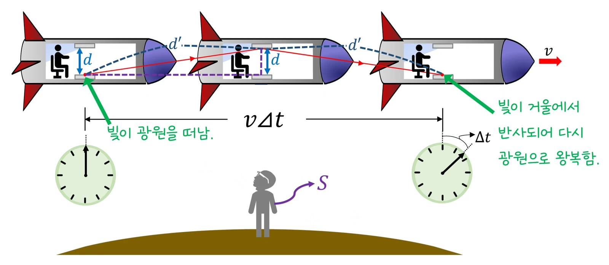

대학 일반물리 실험 2 · 14주차 · 특수 상대성 이론
실험에서 뮤온 100,000개(고유 수명 τ₀ = 2.197 μs)를 속력 v(0.900c~0.999c)와 출발 높이 h(5·10·15 km)를 바꾸며 내려보내고 땅에 도달한 수를 기록했습니다. 10 km를 0.995c로 지나는 데 33.5 μs(τ₀의 15.3배)가 걸려 고전 예측은 0.02개였지만, 실제로는 약 21,900개가 도달했고 그 수로 거꾸로 구한 γ ≈ 10.0이 이론값 10.01과 맞았습니다. 시간 팽창과 길이 수축을 정리합니다.
실험 데이터 되짚기
실험 안내: 뮤온 속력 v 슬라이더(0.900c~0.999c)와 출발 높이 h(5·10·15 km)를 고른 뒤 「뮤온 내려보내기」를 누르면 도달 수(√N 크기 통계 요동 포함)와 γ 추정값이 기록표에 자동으로 쌓입니다. 기록이 4개 이상이면 「데이터 검증」 탭에서 γ 추정–γ 이론 그래프와 고전 예측·측정 비교표가 열립니다.
| v/c | h (km) | γ 이론 | 비행 시간 (μs) | 고전 예측 | 상대론 예측 | 측정 N | γ 추정 |
|---|---|---|---|---|---|---|---|
| 0.900 | 10 | 2.294 | 37.06 | 0.005 | 64 | 72 | 2.331 |
| 0.950 | 10 | 3.203 | 35.11 | 0.012 | 680 | 688 | 3.210 |
| 0.990 | 10 | 7.089 | 33.69 | 0.022 | 11,494 | 11,396 | 7.061 |
| 0.995 | 10 | 10.013 | 33.52 | 0.024 | 21,785 | 21,895 | 10.046 |
| 0.999 | 10 | 22.366 | 33.39 | 0.025 | 50,688 | 50,669 | 22.354 |
| 0.995 | 5 | 10.013 | 16.76 | 49 | 46,674 | 46,503 | 9.964 |
v가 0.9c에서 0.999c로 바뀌어도 비행 시간은 37 → 33 μs로 거의 같지만 γ가 2.3에서 22로 커져 도달 수는 64개에서 5만 개로 늘어납니다. 지면에서 보면 뮤온의 시계가 γ배 느리게 가고(수명 γτ₀), 뮤온에서 보면 대기 두께가 h/γ로 줄어듭니다(0.995c에서 10 km → 1.0 km). 두 관점은 같은 도달 수 N = N₀exp(−t/(γτ₀))를 줍니다. 도달 수가 적을수록(0.9c) γ 추정이 통계 요동에 크게 흔들립니다.
두 가정: ① 물리 법칙은 모든 관성계에서 같다 ② 빛의 속력은 모든 관성계에서 c로 같다. 여기서 γ = 1/√(1 − v²/c²)가 나옵니다.
교재 그림
땅에서 본 빛 시계 — 빛이 더 먼 길을 간다

우주선 안에서는 빛이 거울 사이 d를 곧게 오가지만, 땅에서 보면 그동안 우주선이 vΔt만큼 가서 빛이 더 긴 d′ 경로를 갑니다. 빛의 속력은 같으므로 땅에서 잰 시간 Δt가 더 길어요: Δt = γΔt₀.
움직여 보기
뮤온 비 — 시간 팽창이 없다면 / 있다면
점 하나가 뮤온 약 670개를 대신합니다(150개로 10만 개를 나타냄). 회색 점은 붕괴한 자리입니다. 속력을 0.9c → 0.999c로 올리면 비행 시간은 거의 같지만 γ가 커져 도달 수가 크게 늘어납니다. (τ₀ = 2.197 μs, 대기에서 에너지 잃음 무시)
u′ = (u + v)/(1 + uv/c²) — 어떤 속도를 더해도 c를 넘지 못합니다. 운동량 p = γmv, 에너지 E = γmc², E² = (pc)² + (mc²)². 동시성도 관성계마다 다릅니다.
일반 상대성 이론은 중력을 시공간의 휘어짐으로 설명합니다. GPS 위성 시계는 특수(느려짐)·일반(빨라짐) 효과를 모두 보정해요.
· 실제 뮤온은 약 15 km 높이 부근에서 다양한 에너지로 생기고, 대기에서 에너지를 잃습니다. 1963년 프리슈·스미스는 산 위와 해수면의 뮤온 수를 비교해 시간 팽창을 확인했어요.
· 뮤온 수명 2.197 μs는 정지한 뮤온의 값입니다.
τ₀ = 2.197 μs · c = 2.998×10⁸ m/s · N₀ = 100,000 · 0.995c → γ = 10.0, 10 km → 뮤온이 본 대기 1.0 km
t = 10⁴ ÷ (0.995 × 2.998×10⁸) = 33.5 μs = 15.3τ₀. 고전: 10⁵ × e^(−15.26) ≈ 0.02개(사실상 0). 상대론: γ = 1/√(1 − 0.995²) = 10.0, 10⁵ × e^(−1.526) ≈ 21,800개.
γ = t/(τ₀ ln(N₀/N)) = 33.52 ÷ (2.197 × ln(100,000/21,895)) = 33.52 ÷ (2.197 × 1.519) = 약 10.04. 이론값 10.01과 0.3 % 차이 — √N ≈ 148개의 통계 요동 범위입니다.